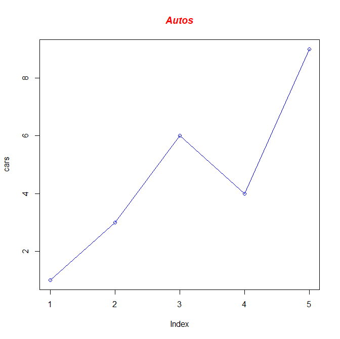
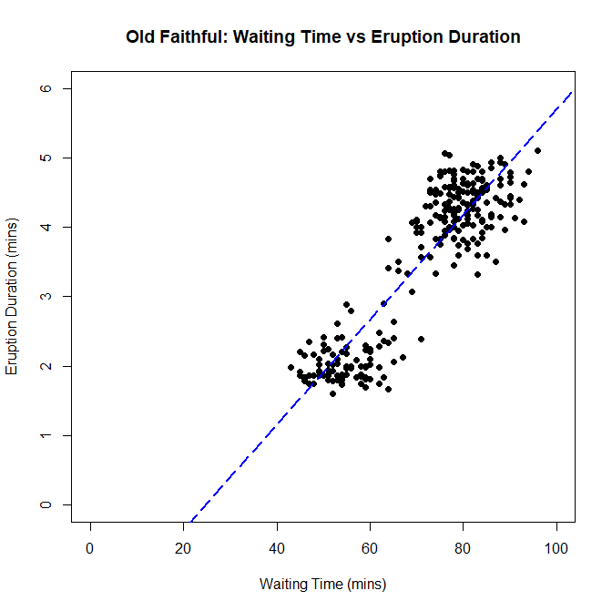
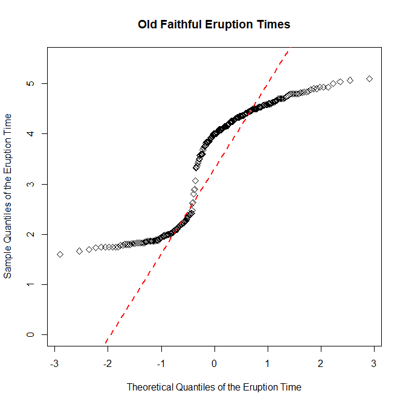

Introduction:
In this exercise, we will be constructing line charts and scatterplots. These are among the most basic and simple graphs to create. You probably learned how to make one in grade school at some point for your science class. Most people think of line charts when they think of graphs, but scatterplots are another chart that is commonly used when trying to graphically depict data. This exercise will be a demonstration in how to make one in R.
Line Charts:
 To begin, let's create a vector consisting of five values that we'll call cars to make a very simple and basic line chart. Here's the code on how I do it.
> cars <- c(1,3,6,4,9)
> plot(cars, type="o", col="blue")
> title(main="Autos", col.main="red", font.main=4)
This code creates a basic line chart. You can put any compatible data set into the variable you want to plot, but for this exercise, we created our own. If we wanted to add another line on top of another on the chart, we can do that. Note that it would be a wise idea not just to change the other line's color, but also the shape of the points on the chart. You can choose not to have points on your line chart, but we will be using them in this exercise. We are going to be creating another vector we'll call trucks and plot it on top of the cars line on the chart. I want to make the line belonging to the trucks vector red, dashed, and with square data points instead of circular. To do this, I have to change up a few of the arguments, but I'll be able to plot both vectors on top of each other. I won't need to declare the cars vector again, but I will need to declare the trucks vector again. Here's the code I used to do so:
> trucks <- c(2,5,4,5,12)
> plot(cars, type="o", col="blue", ylim=c(0,12))
> lines(trucks, type="o", pch=22, lty=2, col="red")
> title(main="Autos", col.main="red", font.main=4)
Our chart is looking even better now. By manipulating the parameters pch and lty, I was able to change the symbol used on each point, and the line type. Now the chart looks a bit more distinctive. But it isn't complete yet. We still need to change the names of the x-axis and y-axis into something that makes more sense, change the index to something that makes more sense, and add a legend to make our chart complete. We also want to adjust the values of the y-axis so that they automatically adjust if we add another vector to this chart with a number in it higher than the maximum y-axis limit, which is 12 in this case. This saves a lot of time and trouble, and keeps coding from getting too repetitive. In fact, we will be adding a new vector called suvs to our chart, so this will be critical to our success. First, we are going to create a variable called g_range, which will find the maximum value of any vectors we plot onto the chart and adjust the y-axis like so. We will have to eliminate the axes on our chart temporarily, and then specify them again. We will construct the x-axis with labels representing each day of the week, and the y-axis with ticks at every fourth value (4, 8, 12, 16, and so on). Unfortunately, manually adding the x-axis and y-axis does not create a border around the entire plot like we want to create. So do not forget to add the command box() after creating your axes. We will have the cars vector be represented with a green, solid line and circular points, the trucks vector represented with a blue, dashed line and square points, and the suvs vector represented with a red, dotted line and triangular points. We will also be labelling the x-axis and y-axis as Total and Days respectively, and in dark green font. The title will be red, bolded, and italicized and read Vehicles, as if we were creating a chart representing vehicles sold at a dealership. And finally, we create a legend in the upper left corner of our chart. Let's take it from the top, and create the final product for this part of the exercise:
> cars <- c(1,3,6,4,9)
> trucks <- c(2,5,4,5,12)
> suvs <- c(4,4,6,6,16)
> g_range <- range(0,cars,trucks,suvs)
> plot(cars, type="o", col="forestgreen", ylim=g_range, axes=FALSE, ann=FALSE)
> axis(1,at=1:5,lab=c("Mon","Tue","Wed","Thu","Fri"))
> axis(2, las=1, at=4*0:g_range[2])
> box()
> lines(trucks, type="o", pch=22, lty=2, col="blue")
> lines(suvs, type="o", pch=24, lty=3, col="red")
> title(main="Vehicles", col.main="red", font.main=4)
> title(xlab="Days", col.lab=rgb(0,0.5,0))
> title(ylab="Total", col.lab=rgb(0,0.5,0))
> legend(1,g_range[2],c("cars","trucks","suvs"),cex=0.8,col=c("forestgreen","blue","red"), pch=c(21,22,24),lty=c(1,2,3))
Scatterplots:
 Next, we are creating a scatterplot. Scatterplots allow us to find the relationship between two variables. Each data point is plotted out, and it is up to us to determine if there is any sort of trend that the scatterplot is trying to display to us. We will be doing this using data gathered from the Old Faithful Geyser in Yellowstone National Park, Wyoming. We will be comparing how much time it takes waiting for an eruption to start, and how long the resulting eruption lasts, and see if there is any trend relating the two. We don't have to load the dataset into a variable from a separate file this time, because the file containing the data we want comes with R when you download it. To access it, type data("faithful") into your console, and the data will be loaded into the variable called faithful. Here's how I create a scatterplot with the data I have:
> data("faithful")
> plot(faithful$waiting, faithful$eruptions, main="Old Faithful: Waiting Time vs Eruption Duration", xlim=c(0,100), ylim=c(0,6), xlab="Waiting Time (mins)", ylab="Eruption Duration(mins)", pch=19)
> abline(lm(faithful$waiting~faithful$eruptions), col="blue", lwd=2, lty=5)
I also added a trendline for further context. And this shows that there is a positive correlation with waiting time and eruption duration. Simply put, if you have to wait longer for the geyser to erupt, you will get an eruption that will last longer.
QQ Plots:
Now we will be creating a normal quantile plot, which will allow us to determine if the data is close to being normally distributed. This means the data is symmetrically distributed on the chart with no skew whatsoever. In the case of line graphs, the trendline will not be skewed to the horizontally or vertically, a 45 degree angle line with a slope of exactly one that perfectly bisects the area of the chart. We're going to do the same thing with the data from the Old Faithful Geyser we used earlier, but see if we can find a normal distribution in the eruption times for the geyser. Here's the code on how I do it.
> qqnorm(faithful$eruptions, main="Old Faithful Eruption Times", ylim=c(0,5.5), xlab="Theoretical Quantiles of the Eruption Time", ylab="Sample Quantiles of the Eruption Time")
> qqline(faithful$eruptions, col="red", lwd=2, lty=2)
As the chart shows, there is a bit of a skew in the line horizontally, meaning the slope is not exactly equal to one. This means that the distribution of the data for the eruption times of the geyser is not normal.
Kansas Census:
Finally, we are going to put everything together and conclude this exercise by creating a chart of the population of three Kansas counties from 1890 to 2010 using US census data. The three counties we will be plotting out are Riley, Geary, and Pottawatomie Counties. But before we can get too deep into things, we have to do a little cleaning up with the CSV that we will be getting the data from to make it easier to plot onto the graph. First, we need to transpose the matrix that we load the data into. This makes it easier to work with our data, and makes it possible to pick the three counties we will be observing out of the possible 100+ counties that exist in Kansas. After we load the data into dataframe that I'll call data, we have to do a little slicing. First, we slice out the columns we want and create the new dataframe that I'll call county using the extract function. After that, we pick out the counties that we will be plotting onto the chart. Then, we have to transpose our newfound dataframe in order to make it easier to work with, using the t() function, so that the row names represent the census year, and the column names represent the county, not the other way round like we had it when we first loaded the data. After that, it looks like what we want our chart to look like. All we need to do is rename the columns and rows. After creating a new g_range, and working on the chart, here's the code I got to complete the final product:
> data <- read.csv(file="KansasCensus.csv", header=TRUE, sep=",")
> county <- data[c(5:18)]
> county2 <- county[which(county$CO_ABBR=="RL" | county$CO_ABBR=="PT" | county$CO_ABBR=="GE"),]
> county3 <- t(county2[,2:14])
> colnames(county3) <- c("Geary","Pottawatomie", "Riley")
> county <- as.data.frame(county3)
> attach(county)
> g_range <- range(0,80000)
> plot(Riley, type="o", pch=15, col="red", axes=FALSE, ann=FALSE, ylim=g_range)
> lines(Geary, type="o", pch=16, col="blue")
> lines(Pottawatomie, type="o", pch=17, col="forestgreen")
> box()
> axis(1, las=0, at=1:13, lab=c(1890,1900,1910,1920,1930,1940,1950,1960,1970,1980,1990,2000,2010))
> axis(2, las=0, at=10000*(0:g_range[2]))
> title(main="Population of Kansas Counties", xlab="Year", ylab="Population")
> legend(1, g_range[2], c("Riley", "Geary", "Pottawatomie"), cex=1, col=c("red","blue","forestgreen"), pch=15:17, lty=1)